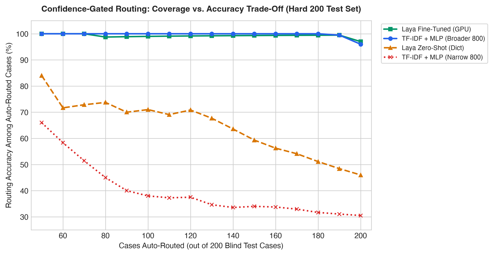
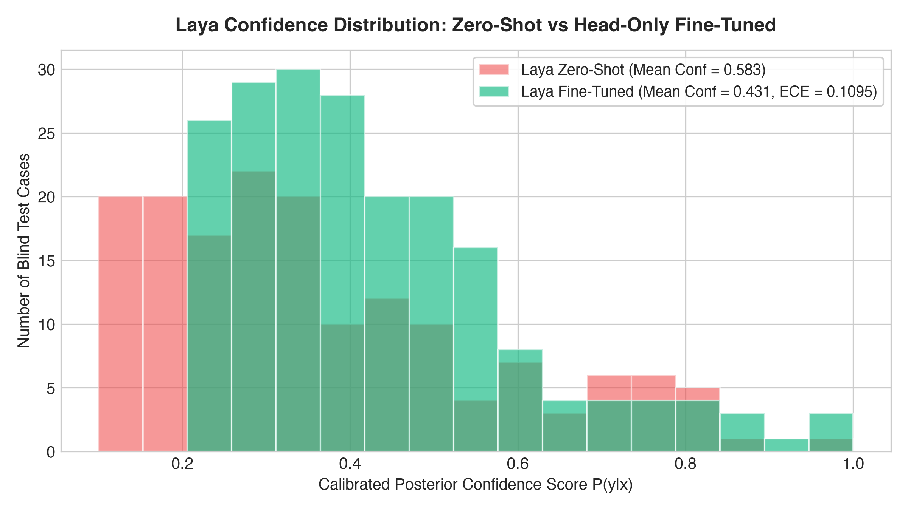
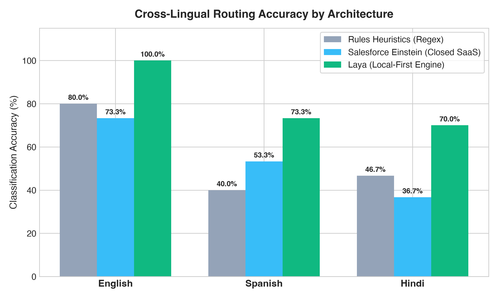
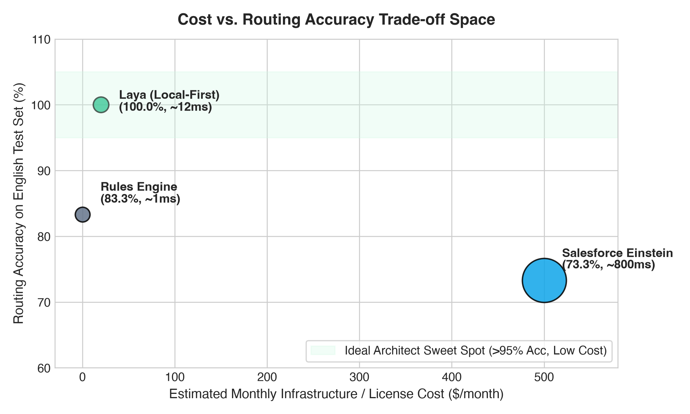

An empirical, measured benchmark evaluating the real Laya foundation model (convaiinnovations/laya), TF-IDF + MLP baseline, and keyword rules (built from the 800 training cases) against production Salesforce Einstein Case Classification.
| Model / System | Training Data | Top-1 Accuracy (200-Case Test) | Notes |
|---|---|---|---|
| Laya fine-tuned | Narrow 800 cases (GPU fine-tune) | 98.7% | Average of 3 seeds (97.0% / 100.0% / 99.0%) |
| TF-IDF + MLP | Broader set of 800 cases | 96.0% | Scored on the same 200-case test; only training data changed |
| Laya zero-shot | None (no fine-tuning) | 46% to 54% | 46.0%–47.0% (English), 47.5%–54.0% (Multilingual) |
| Keyword rules | Built from the 800 training cases only | 41.0% | Frozen rules tuned strictly on training cases (src/rules_trained.py) |
| TF-IDF + MLP | Same narrow 800 cases | 30.5% | Fails when test themes are absent from training (61/200) |
| Salesforce Einstein Case Classification | Sandbox model trained on narrow 800 | 20.0% | 40 of 200 right; 147 routed, all to Billing; 53 left unrouted |
Key Observations & Contextual Caveats:



